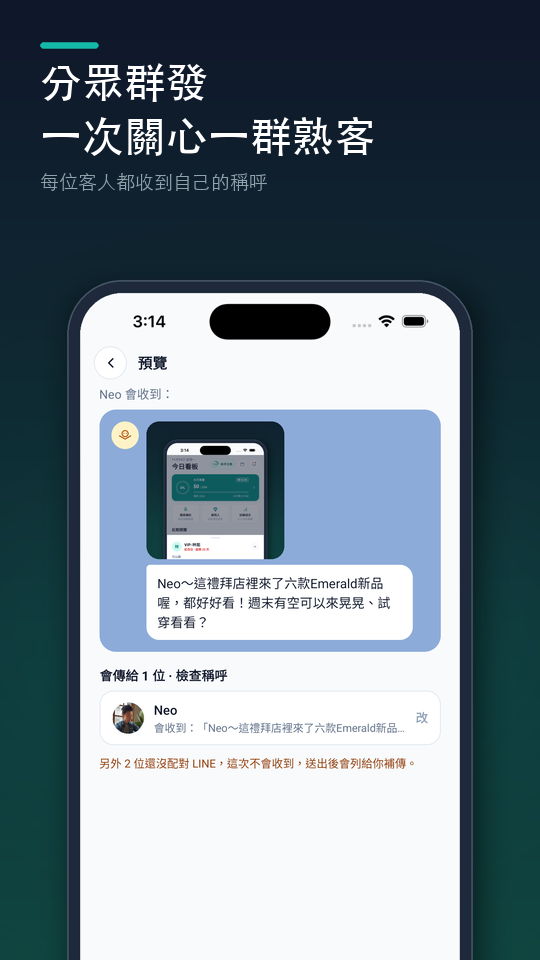

分眾群發教學：挑一群熟客，用 LINE 官方帳號一次傳，每位都收到自己的稱呼
情境：祖母綠新款到店，你想通知收藏彩寶的那十幾位熟客。一個個傳要花整個下午；用 LINE 官方帳號的群發又只能全部好友一起收，開頭還是冷冰冰的「親愛的顧客您好」。
熟客簿的分眾群發幫你圈出「VIP＋喜歡祖母綠」的客人，一則訊息配一張商品照，每位客人收到的開頭都是自己的稱呼——林姐收到「林姐～」、王總收到「王總～」，像你一個個親手傳的。

操作步驟
從客戶列表點「群發」
客戶頁右上角的 群發（連接 LINE 官方帳號後才會出現）。也可以從 貨找人 的結果直接按 用官方帳號傳給這幾位，名單和商品照會自動帶入。
圈出要傳的客人
點等級（VVIP、VIP…）或偏好（祖母綠、珍珠…）的標籤，下面即時顯示幾位符合、幾位已配對 LINE。按 看名單 可以逐一取消勾選。
寫訊息、附照片
按 ＋插入客人稱呼 放入稱呼佔位，寫完可以按 AI 幫我潤飾 改成自然口語。照片最多附 1 張，和文字一起送、仍只算 1 則額度。
預覽、檢查稱呼
預覽頁會顯示客人實際收到的樣子。暱稱帶「VIP-」或括號備註的會用黃色提醒，按 改 修改，勾 記住這個稱呼 之後群發都沿用。
送出
確認會用掉幾則額度後送出。幾十位以內幾秒就傳完；人數多會在背景傳，傳完推播通知你。每位客人自動記一筆互動、更新最後聯絡時間。
補傳給還沒配對的客人
結果頁會列出還沒配對 LINE 的客人，訊息已換好各自的稱呼，按 複製並開 LINE 貼上就能傳，傳完自動標記。
小技巧
- 額度不夠不會只傳一半。要傳的人數超過官方帳號本月剩餘額度時會先擋下來，你可以減少人數或下個月再傳。
- 群發的每一筆都記在 群發紀錄（LINE 官方帳號頁進入），誰沒傳成功、誰待補傳一目了然。
- 客人封鎖官方帳號會自動排除，不浪費額度。
常見問題
- 需要 LINE 官方帳號的認證（藍盾）嗎？
- 不用。只要官方帳號連接好熟客簿、客人完成配對就能用；一般帳號也可以先用「邀請好友回覆」把既有好友接進來。
- 群發會用掉多少 LINE 額度？
- 照實際送達的人數算：傳給 13 位就是 13 則；圖片和文字一起送仍只算 1 則。送出前畫面會先告訴你會用掉幾則、本月還剩幾則。
- 客人會知道這是群發嗎？
- 每位客人收到的是一對一訊息，開頭是自己的稱呼，看起來就像你親自傳的。建議內容也保持像平常說話，不要寫成廣告文。
- 沒配對 LINE 的客人怎麼辦？
- 送出後會列成「待補傳」清單，訊息已各自換好稱呼，一鍵複製開 LINE 或 WhatsApp 傳，傳完自動記互動。
想直接試試看？
熟客簿是給第一線銷售顧問用的客戶管理 App：講 30 秒記好客人、生日回訪自動提醒、新貨到了幫你找出該通知誰。免費試用 14 天，不用綁信用卡。